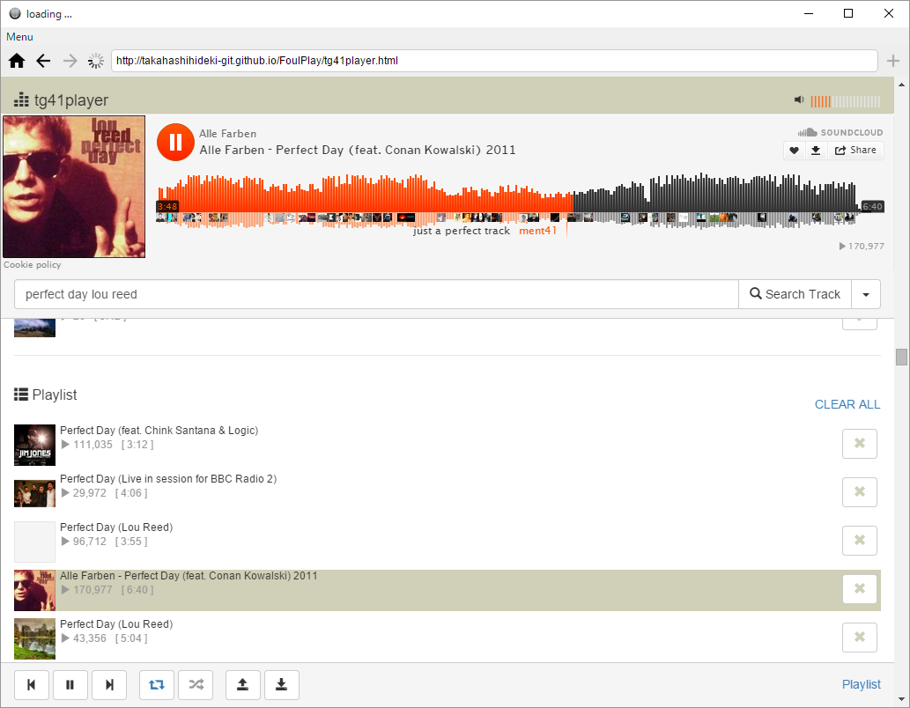

tg41player (in Foul) は、Sound Cloud の音源をすばやくプレイリストにして楽しむことができるWebアプリ tg41player に、作成したプレイリストをローカルファイルとして保存する機能を追加するためのアプリです。

アプリといっても、github に公開されているソースコードを再利用して Foul 用のアプリとして拡張したわけではなく、iframe に読み込んだ tg41player の画面上に、プレイリストの保存と読み込みのためのボタンを挿入するだけの、従来のブラウザでいえば、いわばブックマークレットや拡張機能の一種です。
下記の URL を Foul のアドレス欄に入力して表示します。表示されたら、アドレス欄の右にある「+」 ボタンをクリックして、ショートカットに登録します。
http://takahashihideki-git.github.io/FoulPlay/tg41player.html
その後、リロードするか、ホーム画面に追加されたアイコンをクリックして再表示すると、プレイリスト保存機能を利用できるようになります。
プレイリストを作成すると表示される画面最下部のプレイリストコントローラにある保存ボタン（上向き矢印のボタン）をクリックすると、プレイリストファイルの保存先を指定するためのダイアログが表示されます。
プレイリストファイルの内容は JSON形式のテキストデータです。任意のファイル名で保存することができます。
初期画面に表示されている「Open Playlist File」をクリックすると、プレイリストファイルを選択するためのダイアログが表示されます。
プレイリストファイルを選択して読み込むと、画面上にプレイリストが表示されます。
いったんプレイリストを表示した後は、画面最下部のプレイリストコントローラにある読み込みボタン（下向き矢印のボタン）をクリックして、プレイリストファイルを読み込むことができます。